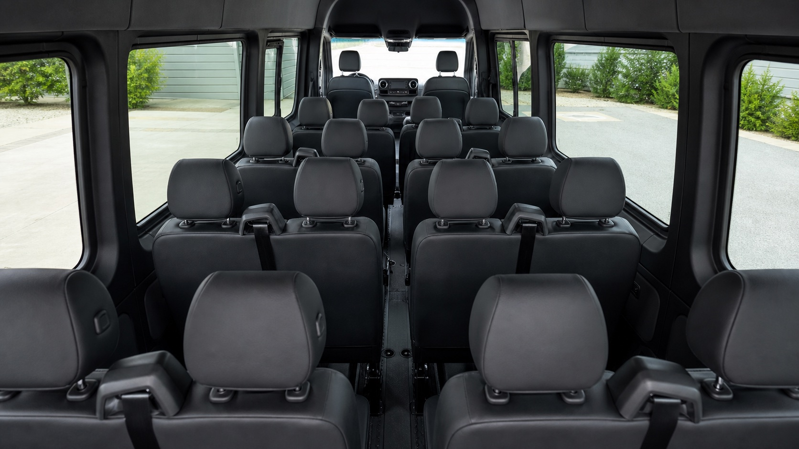

- Pickup sweep across one neighborhood or hotel cluster
- Arrival timed for TD Garden, Fenway, Gillette Stadium, or White Stadium
- Post-game meetup zone and synchronized return
Boston's newest group transportation company
Leave the driving to us.
A fresh, fun, driver-first way to move your group for weddings, corporate outings, airport runs, mountain weekends, and custom New England routes.
Need ideas?
Find your route
Open the Trip Menu for inspiration, from an open-ended occasion to a carefully curated route. We do it all.Still planning?
See a rough estimate in less than 30 seconds
We can give you a rough estimate to help you visualize your rideReady to reach out?
Get your trip quote
Share your date, route, and group size, and get your personal quote the same day.Trip menu
Pick your vibe and open a package route
Your ride
Mercedes-Benz Sprinter 2500 High Roof
A polished private ride for up to 14 guests, built to keep your group together, comfortable, and moving through Boston with ease.

Interior seating Comfortable room for up to 14 guests

Private group ride
Room for the whole plan
- Up to 14 guests, with a high-roof layout that makes getting in and settling in easy
- Right-sized for Boston streets, restaurant drop-offs, and a night that moves from one stop to the next
- A practical private ride for medium-size groups, with room to ride together without paying for an oversized bus
- A modern, purpose-built van selected for a stable, comfortable ride and a professional driver at the wheel
Personalized quote
Quick planning tool
Estimate your ride in under 30 seconds
Estimated range
Build your estimate
Enter your route details for a single-day planning range.
Add your route details to see a planning range.
Request a custom quoteWhy groups book us
Party vibe, professional route execution
A ride you can count on
Your group rides in a Mercedes-Benz Sprinter 2500 High Roof chosen for an easy, comfortable night from first pickup to final drop-off.
One driver, one plan
Your group stays together with one coordinated timeline from first pickup through final drop-off.
Route-first communication
We quote and plan around your actual date, stop list, and group size rather than one-size-fits-all pricing.
Built for group momentum
We handle traffic, parking, and timing so your crew can focus on the event, not logistics.
Common questions
FAQ
Do you have a minimum booking?
Yes. Our current minimum is 3 hours for local bookings.
How do estimates and quotes work?
Use the estimator for a rough planning range on a straightforward single-day route. For a personalized quote, share your date, group size, stops, and desired timing. We build the quote around the actual route and aim to respond the same day. Same-day island ferry terminal service can be estimated; multi-day roundtrip transport or stay-on-island services receive a custom quote.
Can we bring our own playlist?
Yes, most vans support Bluetooth connection for your music.
How far in advance should we book?
2-4 weeks is ideal. Peak wedding and graduation weekends fill quickly.
Do you serve outside Boston?
Yes. We serve Greater Boston and nearby New England routes.
Do you offer golf outings and Cape trips?
Yes. We run both golf-day and Cape Cod routes, including custom pickup and return timing.
Can you handle bachelor and bachelorette nights?
Yes. We can plan multi-stop bachelor and bachelorette routes with grouped pickup and return windows.
Do you offer family-friendly and non-alcoholic trips?
Yes. We plan family outings, small-group field trips, and sports or cultural day trips. Share the group makeup, timing, and any accessibility needs so we can shape an appropriate route.
Who will be driving?
Boston Party Van was founded by Andrew, a young professional who followed the entrepreneurial urge to start a company after a successful corporate career. Andrew will be your driver for about 99% of trips. If another professional driver is scheduled, you will be notified ahead of time.
What kind of vehicle will we ride in?
Your group rides in a Mercedes-Benz Sprinter 2500 High Roof for up to 14 guests. It keeps medium-size groups together while staying practical for Boston streets and drop-offs.
Can you plan multi-stop or multi-day trips?
Yes. We build the quote around your actual stops, timing, and return plan, from a Boston night out to a multi-day New England itinerary.
Can you coordinate Martha's Vineyard or Nantucket ferry transfers?
Yes. We can coordinate Woods Hole or Hyannis pickup and drop-off, multi-day return timing, and discuss bringing the Sprinter on the ferry for on-demand island service, subject to ferry reservation and vehicle availability.
Let’s build your route
Request a custom quote
Submissions are sent directly to our booking inbox. If there is a delivery issue, we will show a backup send option. Lead source tags are included automatically.
Booking map
What happens after you hit submit
Step 01
Trip brief intake
We review your date, headcount, pickup zone, and stop list.
Step 02
Route + timing draft
We suggest a practical route sequence and timing windows.
Step 03
Your Sprinter, confirmed
We confirm your Mercedes-Benz Sprinter 2500 High Roof and event-day plan.
Step 04
Confirmation + day-of support
You receive final details and day-of coordination contact info.
Route directory
Destinations we plan around
A few of the places that fit naturally into our most-requested trip plans. Tell us your actual stops and we will build the route around them.
This list is not every destination we serve. We cover most of Greater Boston and extend across much of New England for day trips and multi-day excursions.
Sporting events
Game Night Express
TD Garden, Fenway Park, Gillette Stadium, Agganis Arena, Harvard Stadium, and White Stadium for Boston Legacy FC.
Family-friendly groups
Family Day Out
Franklin Park Zoo, Museum of Science, New England Aquarium, Boston Children's Museum, and local field-trip stops.
Golf trips
Tee Time Takeoff
Granite Links, Pinehills, The International, TPC Boston, and Waverly Oaks.
Cape trips
Cape Escape Route
Falmouth, Woods Hole, Hyannis, Chatham, Provincetown, and Mashpee.
Island ferry transfers
Martha's Vineyard + Nantucket
Woods Hole, Hyannis, Vineyard Haven, Oak Bluffs, Edgartown, and Nantucket.
White Mountains / Northern NH
Mountain Weekend Run
North Conway, Cranmore, Loon Mountain, Waterville Valley, and Bretton Woods.
Weddings
Ceremony + Reception Shuttle
Back Bay, Beacon Hill, Seaport, Cambridge, the North Shore, and Cape Cod.
Corporate outings
Team Offsite Transit
Seaport, Back Bay, Kendall Square, Waltham, Burlington, and Newton.
Bachelor / bachelorette
Weekend Party Circuit
Seaport, Back Bay, South Boston, the North End, Foxborough, and Salem.
Boston nightlife
Boston Bar Crawl
Union Street, Faneuil Hall, the North End, Seaport, Back Bay, and the South End.
Concert nights
Showtime Shuttle
MGM Music Hall, Roadrunner, House of Blues, Leader Bank Pavilion, and Gillette Stadium.
Local city loops
Boston Night Loop
Beacon Hill, Back Bay, South End, Seaport, Charlestown, and Cambridge.